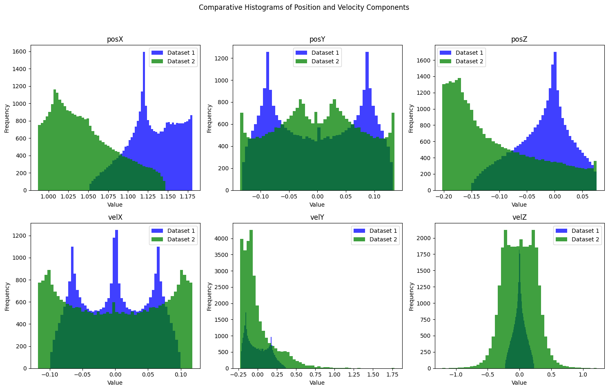
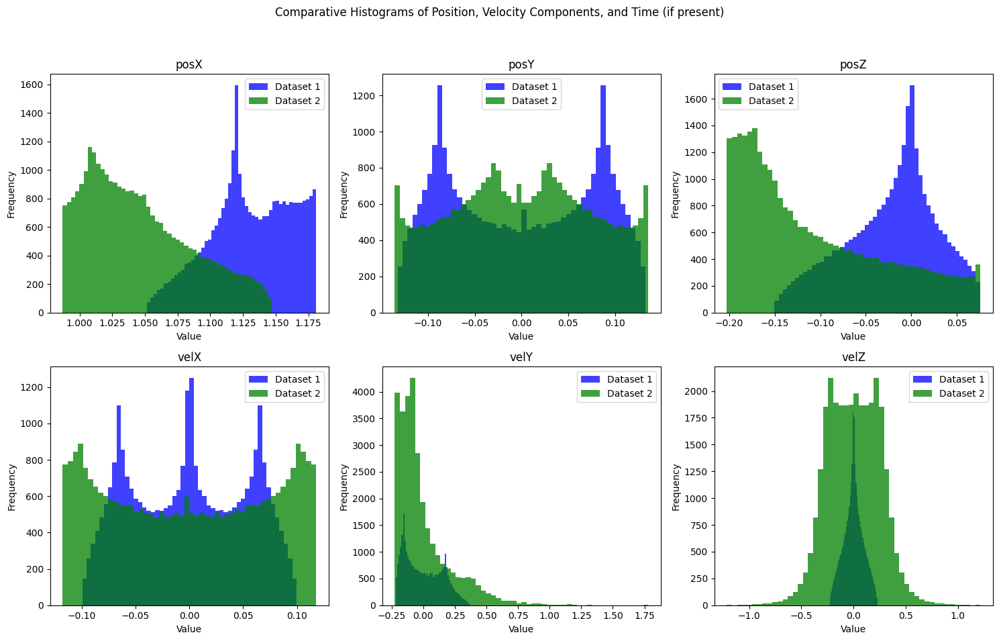
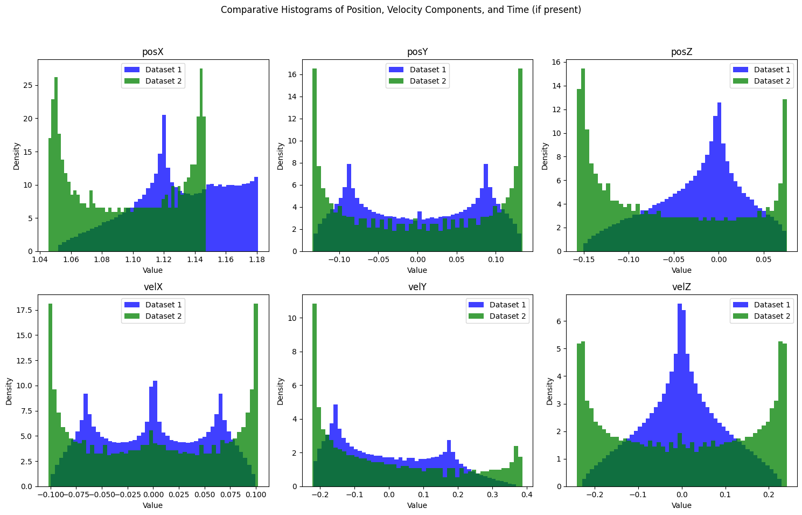
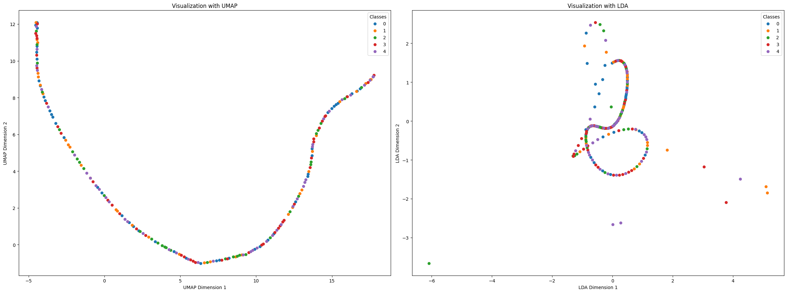
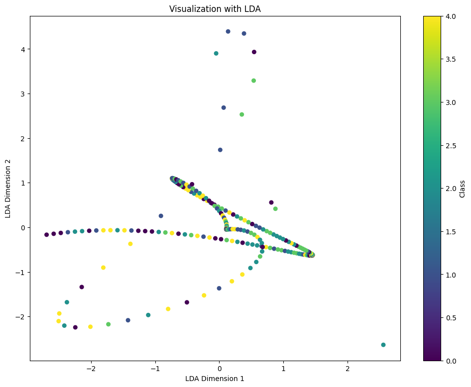
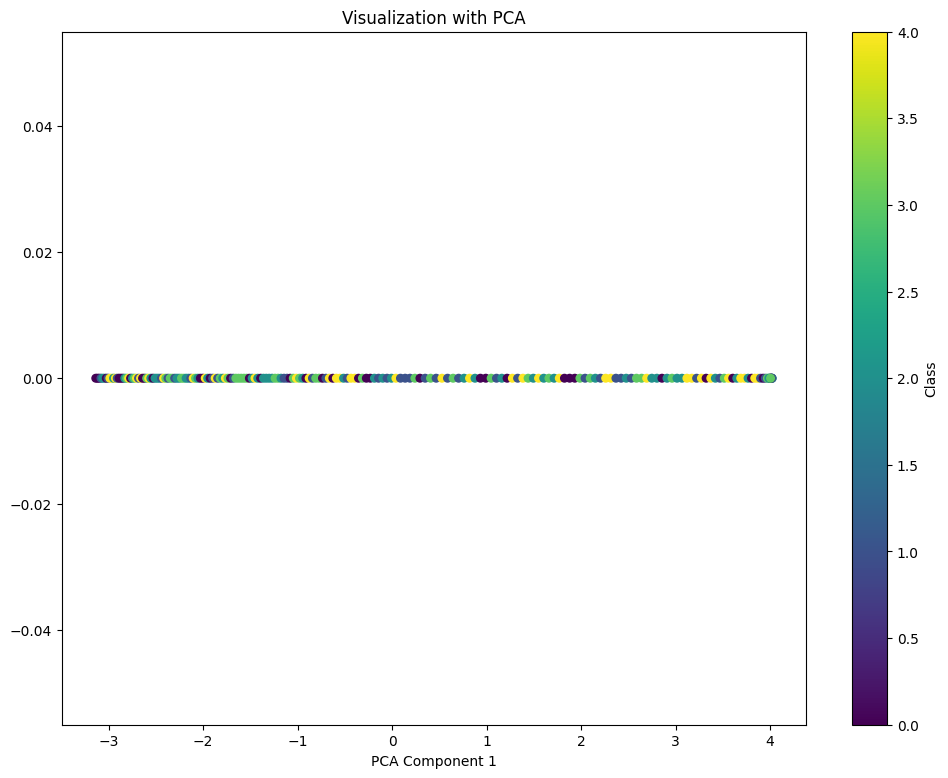
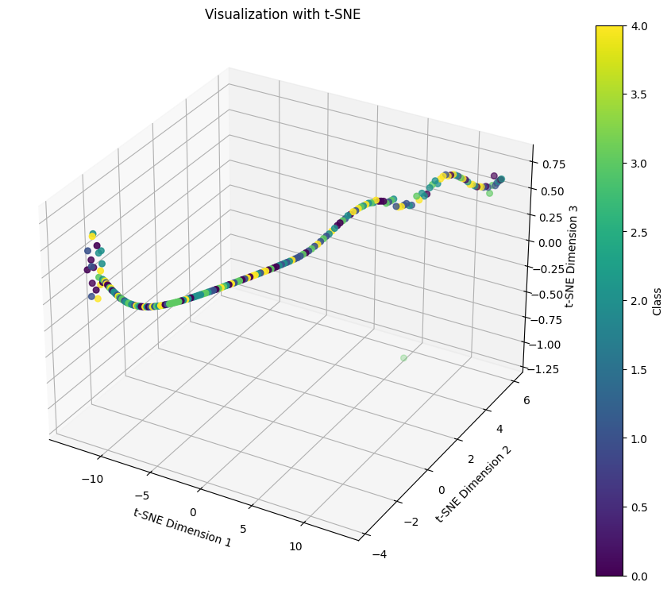

from orbit_generation.data import get_example_orbit_dataStatistics
Scripts to generate statistics out of orbit data
orbit_data = get_example_orbit_data()
orbit_data.shape(200, 6, 300)Simple statistics
calculate_overall_statistics
calculate_overall_statistics (orbits:numpy.ndarray)
*Calculate the overall min, mean, max, and percentile statistics for each scalar (position and velocity in X, Y, Z) across all time instants and orbits.
Parameters: - orbits (np.ndarray): A numpy array of shape (number_of_orbits, 6, number_of_time_instants) containing orbit data.
Returns: - Dict[str, Dict[str, float]]: A dictionary with statistics (‘min’, ‘mean’, ‘max’, ‘25%’, ‘50%’, ‘75%’) for each scalar.*
| Type | Details | |
|---|---|---|
| orbits | ndarray | The array containing orbit data of shape (number_of_orbits, 6, number_of_time_instants). |
| Returns | typing.Dict[str, typing.Dict[str, float]] |
orbits = np.array([
[[1, 2, 3], [2, 3, 4], [3, 4, 5], [4, 5, 6], [5, 6, 7], [6, 7, 8]], # Orbit 1
[[4, 4, 4], [3, 4, 5], [4, 5, 6], [5, 6, 7], [6, 7, 8], [7, 8, 9]] # Orbit 2
])
# Call the function to calculate statistics
stats = calculate_overall_statistics(orbits)
# Using test_eq to perform tests
test_eq(stats['posx']['min'], 1)
test_eq(stats['posx']['mean'], 3)
test_eq(stats['posx']['max'], 4)
test_eq(stats['posx']['25%'], 2.25)
test_eq(stats['posx']['50%'], 3.5)
test_eq(stats['posx']['75%'], 4)Plot Time
plot_time_increments
plot_time_increments (orbit_dataset:numpy.ndarray, orbits_to_plot:List[int]=None, show_legend:bool=True)
*Plots the time as a function to visualize how it increments for each orbit.
Parameters: orbit_dataset (np.ndarray): A 3D numpy array where the first dimension is the number of orbits, the second dimension contains 7 scalars (time, posx, posy, posz, velx, vely, velz), and the third dimension is the time steps. orbits_to_plot (list[int], optional): List of integers referring to the orbits to plot. If None, plots all orbits. show_legend (bool, optional): Whether to display the legend. Default is True.*
| Type | Default | Details | |
|---|---|---|---|
| orbit_dataset | ndarray | The 3D numpy array representing the orbits | |
| orbits_to_plot | typing.List[int] | None | Optional list of integers referring to the orbits to plot |
| show_legend | bool | True | Boolean to control the display of the legend |
| Returns | None |
Plot Histograms
plot_orbit_data_lengths
plot_orbit_data_lengths (orbit_data, key_range=(1, 36072), dimension=0, bins=30, color='blue', plot=True, title='Histogram of Orbits Time Steps')
plot_histograms_position
plot_histograms_position (data:numpy.ndarray, save_path:str=None)
*Plots histograms for the scalar values (position and velocity in X, Y, Z, and optionally time) across all orbits and time points. Handles arrays with 6 or 7 scalar dimensions, with the 7th being ‘time’.
Parameters: - data (np.ndarray): The orbit data array. - save_path (str, optional): If provided, the plot will be saved to this file path.*
| Type | Default | Details | |
|---|---|---|---|
| data | ndarray | The orbit data array of shape (num_orbits, num_scalars, num_time_points). | |
| save_path | str | None | Optional path to save the plot image. |
| Returns | None |
plot_histograms_position(orbit_data)
plot_histograms_comparison
plot_histograms_comparison (data1:numpy.ndarray, data2:numpy.ndarray, label1:str='Dataset 1', label2:str='Dataset 2', save_path:str=None, normalize:bool=False)
Plots histograms for scalar values (position, velocity in X, Y, Z, and optionally time) from two datasets on the same chart with different colors. Supports both 6 and 7 scalar dimensions, with the 7th being ‘time’. Optionally saves the plot to a specified file path and can normalize histograms for relative comparison.
| Type | Default | Details | |
|---|---|---|---|
| data1 | ndarray | First orbit data array of shape (num_orbits, num_scalars, num_time_points). | |
| data2 | ndarray | Second orbit data array of shape (num_orbits, num_scalars, num_time_points). | |
| label1 | str | Dataset 1 | Label for the first dataset. |
| label2 | str | Dataset 2 | Label for the second dataset. |
| save_path | str | None | Optional path to save the plot image. |
| normalize | bool | False | Normalize histograms to show relative frequencies. |
| Returns | None |
orbit_data1 = orbit_data[:100]
orbit_data2 = orbit_data[100:]
plot_histograms_comparison(orbit_data1, orbit_data2)
orbit_data3 = orbit_data2[:5]
plot_histograms_comparison(orbit_data1, orbit_data3, normalize=True)
Latent Space
plot_latent_space
plot_latent_space (latent_representations:numpy.ndarray, labels:numpy.ndarray, techniques:List[str]=['PCA'], n_components:int=2, figsize:tuple=(12, 9), colors:Union[List[str],NoneType]=None, save_path:Union[str,NoneType]=None, **kwargs:Any)
Plots and optionally saves the latent space representations using specified dimensionality reduction techniques. Each technique’s plot is handled in a separate figure, supporting 1D, 2D, or 3D visualizations.
| Type | Default | Details | |
|---|---|---|---|
| latent_representations | ndarray | Precomputed latent representations (numpy array). | |
| labels | ndarray | Labels for the data points, used for coloring in the plot. | |
| techniques | typing.List[str] | [‘PCA’] | Techniques to use for reduction (‘PCA’, ‘t-SNE’, ‘UMAP’, ‘LDA’). |
| n_components | int | 2 | Number of dimensions to reduce to (1, 2, or 3). |
| figsize | tuple | (12, 9) | Size of the figure for each subplot. |
| colors | typing.Union[typing.List[str], NoneType] | None | Optional list of colors for the labels. If None, use random colors. |
| save_path | typing.Union[str, NoneType] | None | Optional path to save the plot image. |
| kwargs | typing.Any | ||
| Returns | None | Additional keyword arguments for dimensionality reduction methods. |
# Reshape data to 2D (num_orbits, 6 * num_time_points)
orbit_data_reshaped = orbit_data.reshape(200, -1)
# Use PCA to reduce to a lower-dimensional space (e.g., 10 dimensions)
pca = PCA(n_components=10)
latent_representations = pca.fit_transform(orbit_data_reshaped)
labels = np.random.randint(0, 5, size=200) # 5 different classes
plot_latent_space(latent_representations, labels, techniques=['UMAP','LDA'])

plot_latent_space(latent_representations, labels, techniques=['PCA'], n_components=1)
plot_latent_space(latent_representations, labels, techniques=['t-SNE'], n_components=3)
Latent Space Synthetic vs Real
plot_combined_latent_space
plot_combined_latent_space (real_data:numpy.ndarray, synthetic_data:numpy.ndarray, encoder, techniques:List[str]=['PCA'], n_components:int=2, figsize:tuple=(12, 9), colors:Union[List[str],NoneType]=None, save_path:Union[str,NoneType]=None, **kwargs:Any)
Plots the combined latent space of real and synthetic data using specified dimensionality reduction techniques.
| Type | Default | Details | |
|---|---|---|---|
| real_data | ndarray | Real data samples. | |
| synthetic_data | ndarray | Synthetic data samples generated by a model. | |
| encoder | Encoder function or model that predicts latent space representations. | ||
| techniques | typing.List[str] | [‘PCA’] | Techniques to use for reduction (‘PCA’, ‘t-SNE’, ‘UMAP’, ‘LDA’). |
| n_components | int | 2 | Number of dimensions to reduce to. |
| figsize | tuple | (12, 9) | Size of the figure for each subplot. |
| colors | typing.Union[typing.List[str], NoneType] | None | Optional list of colors for the labels. If None, use random colors. |
| save_path | typing.Union[str, NoneType] | None | Optional path to save the plot image. |
| kwargs | typing.Any | ||
| Returns | None | Additional keyword arguments for dimensionality reduction methods. |
plot_combined_latent_space_with_labels
plot_combined_latent_space_with_labels (real_data:numpy.ndarray, synthetic_data:numpy.ndarray, real_labels:numpy.ndarray, encoder, techniques:List[str]=['PCA'], n_components:int=2, figsize:tuple=(12, 9), real_color s:Union[List[str],NoneType]=None, synthetic_color:str='red', save_p ath:Union[str,NoneType]=None, **kwargs:Any)
Plots the combined latent space of real and synthetic data using specified dimensionality reduction techniques. The real data points are colored according to their labels, and the synthetic data points are overlaid in a new color.
| Type | Default | Details | |
|---|---|---|---|
| real_data | ndarray | Real data samples. | |
| synthetic_data | ndarray | Synthetic data samples generated by a model. | |
| real_labels | ndarray | Labels for the real data samples. | |
| encoder | Encoder function or model that predicts latent space representations. | ||
| techniques | typing.List[str] | [‘PCA’] | Techniques to use for reduction (‘PCA’, ‘t-SNE’, ‘UMAP’, ‘LDA’). |
| n_components | int | 2 | Number of dimensions to reduce to. |
| figsize | tuple | (12, 9) | Size of the figure for each subplot. |
| real_colors | typing.Union[typing.List[str], NoneType] | None | Optional list of colors for the real data labels. If None, use random colors. |
| synthetic_color | str | red | Color for the synthetic data points. |
| save_path | typing.Union[str, NoneType] | None | Optional path to save the plot image. |
| kwargs | typing.Any | ||
| Returns | None | Additional keyword arguments for dimensionality reduction methods. |